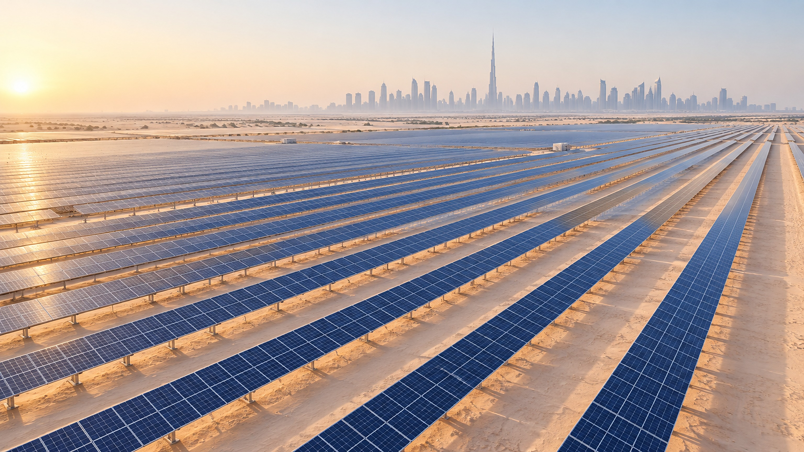

SolarTwin AI
A trustworthy agentic digital twin for adaptive solar energy management

Not just what a new solar plant will generate, but when to trust the forecast, and how to act on it safely.
New plants have little generation history, so operators reuse models trained on other sites. Our accepted NEECON 2026 paper shows that this transfer can succeed, and can also fail. SolarTwin AI is a software digital twin that monitors transfer risk, compares forecasts, plans battery and load actions within hard limits, and explains every decision.
A transferred forecast can be confidently wrong, and nothing in a standard pipeline flags it.
- 01Detect when a transferred forecast should not be trusted.
- 02Decide a safe battery and flexible-load action within constraints.
- 03Explain and log each decision with measured evidence.
Data & scenarios
Plant telemetry, weather inputs, controlled shift events
Forecast engine
CDAN + LSTM + Clear-Sky Index · Transformer · Persistence
Trust monitor
Feature shift · model disagreement · risk flag
Energy optimizer
Battery and flexible load under hard constraints
Explain & audit
Decision trace; every number computed in code
A trust layer between forecasting and control. Agents call real models and solvers; the LLM explains, but never invents numbers or overrides constraints.
Plant 1 → Plant 2 with zero target labels, using CDAN + LSTM + Clear-Sky Index under capacity mismatch.
Negative transfer
India → Australia: adaptation hurt accuracy, while an unadapted Transformer kept positive skill.
Monitor, don’t assume
Transfer quality depends on the site. SolarTwin AI checks it before a forecast drives a decision.
Forecast vs. observed generation Observed Transferred Fallback
Agent decision trace
- 1Models disagreeGap exceeds threshold at 10:40
- 2Shift detectedInput features drift from training data
- 3Fallback selectedTransformer forecast takes over
- 4Plan re-optimizedBattery reserve kept above 20%
Normal operation
Site resembles the training data.
Sudden cloud
Output drops; the battery plan adapts.
Transfer-risk shift
Seasonal mismatch triggers the fallback.
Demand spike
Optimizer reports any unmet demand.
Trust is visible
Risk flags, model disagreement and fallbacks are shown, not hidden.
Safe by design
Battery and load limits are enforced in code, outside the LLM.
Demo-ready
Runs offline on a standard PC; all assets are simulated.
Next: report detector precision, recall and false alarms, and compare cost, renewable use and unmet demand with baselines.
[1] Belay et al., “Learning When to Transfer: Robust Solar Power Forecasting Under Capacity Mismatch,” accepted at NEECON 2026.